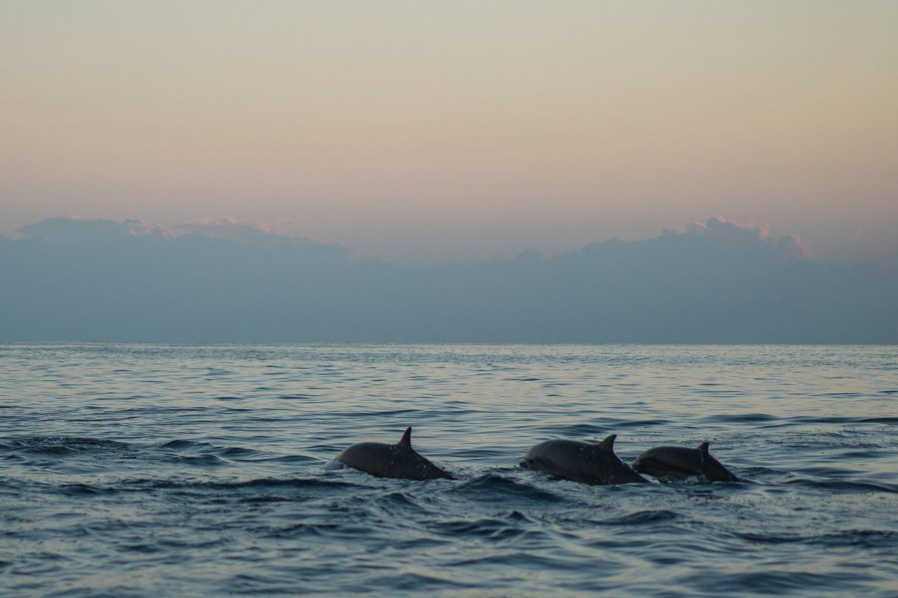
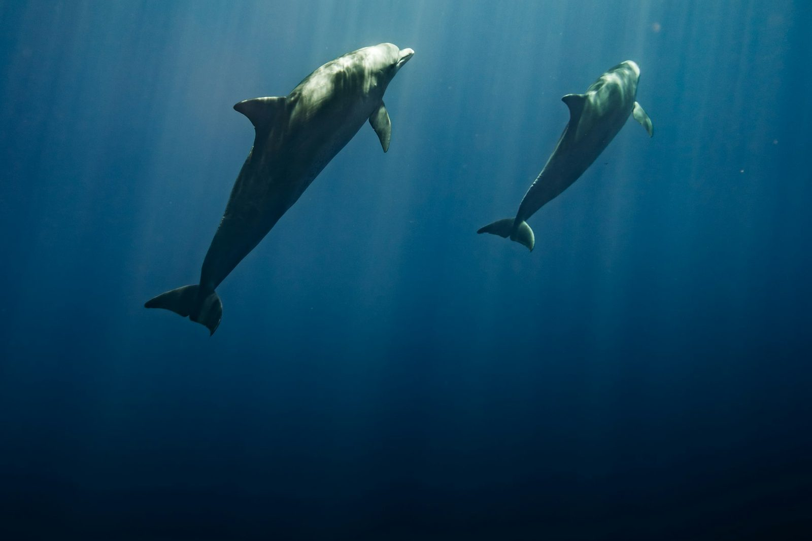
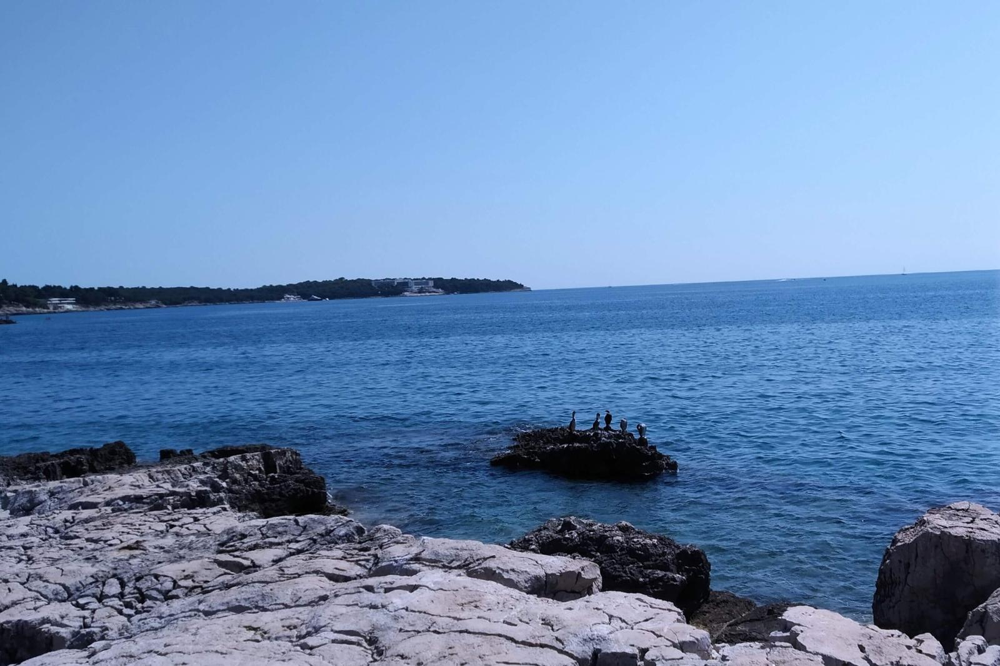
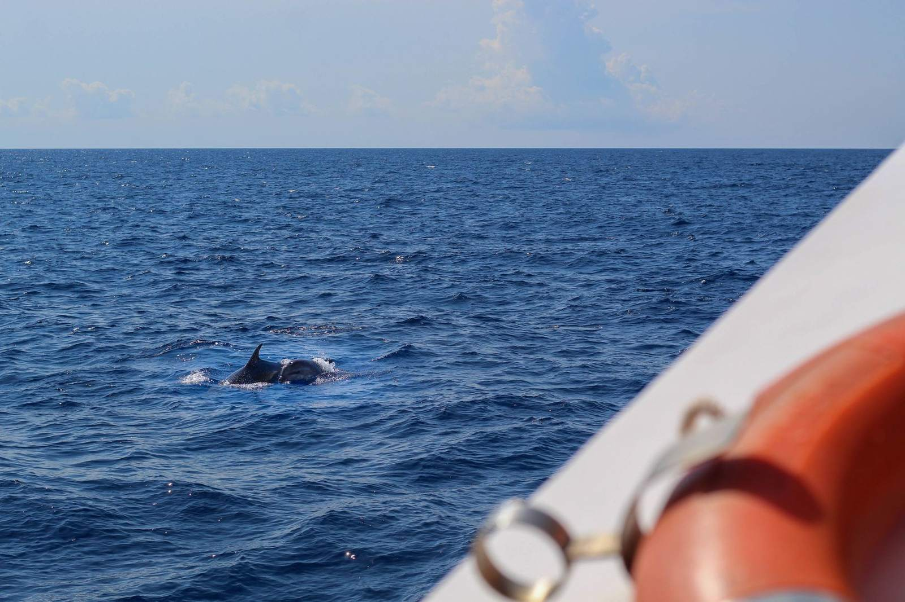
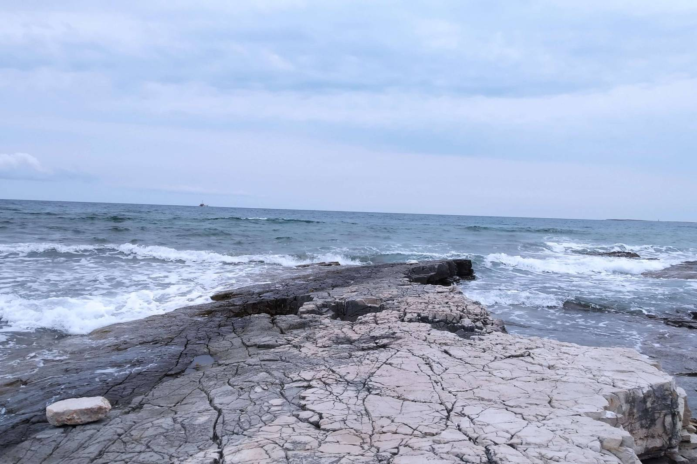

Rejs z delfinami w Puli
Wieczorny rejs wokół Wysp Brioni w złotym świetle, z szansą na spotkanie delfinów.
- Godziny
- 18:00–21:00
- Cena
- 50 € za osobę dorosłą
- Kąpiel
- Bez przystanku, bez opłaty parkowej
- Dzieci
- Do 3 lat bezpłatnie
Dlaczego wieczorem
Delfiny żyją w wodach wokół Wysp Brioni i często są aktywne pod wieczór, dlatego ten rejs jest dopasowany do pory zachodu słońca. Wypływamy z nabrzeża Riva, okrążamy wyspy i wypatrujemy delfinów, a Państwo w tym czasie mogą zjeść posiłek, napić się czegoś i posłuchać muzyki.
Spotkania z delfinami zdarzają się często, ale nigdy nie są gwarantowane. Jeśli się nie pojawią, i tak czeka Państwa spokojna woda i najpiękniejsze światło dnia.
Nawet bez delfinów światło nad wyspami jest warte tej wyprawy.

Szczegóły rejsu
- Godziny: 18:00–21:00
- Cena: 50 € za osobę dorosłą, dzieci do 3 lat bezpłatnie
- Jeden posiłek: ryba, burger lub danie wegetariańskie
- Wino, soki i woda mineralna bez limitu
- Bez przystanku na kąpiel i bez opłaty parkowej
- Zwierzęta mile widziane na pokładzie
- Wypłynięcie z nabrzeża Riva, niedaleko mariny ACI
Dla kogo
Dla par, rodzin, przyjaciół i wszystkich, którzy wolą spokojny wieczór na wodzie. Jeśli chcą Państwo też popływać, warto dodać do pobytu rejs dzienny. Wielu gości wybiera oba.
- Rejs o zachodzie słońca: 18:00–21:00
- Posiłek i napoje bez limitu
- Dzieci do 3 lat: bezpłatnie
- Zwierzęta mile widziane na pokładzie
Jak w pełni wykorzystać wieczór
Horyzont i kilwater
Delfiny często pojawiają się przy rufie lub przed dziobem. Warto mieć aparat w gotowości.
Coś cieplejszego do ubrania
Gdy słońce chyli się ku horyzontowi, na wodzie szybko robi się chłodno.
Ochrona telefonu przed wodą
Mały wodoszczelny pokrowiec przyda się, jeśli będzie chlapać.
Zapas czasu
Warto przyjść 30 minut wcześniej, aby wybrać dobre miejsce.
Zdjęcia



Najczęściej zadawane pytania
Gdzie na łodzi najlepiej wypatrywać delfinów?
Czy wieczór jest wart zachodu, jeśli delfiny się nie pojawią?
Jak ciepło jest na wodzie po zachodzie słońca?
Czy telefonem można zrobić dobre zdjęcia delfinów?
Co po powrocie o 21:00?
Gotowi na rezerwację?
Prosimy przesłać nam daty i liczbę osób. Sprawdzimy dostępność i odpowiemy w ciągu 24 godzin.